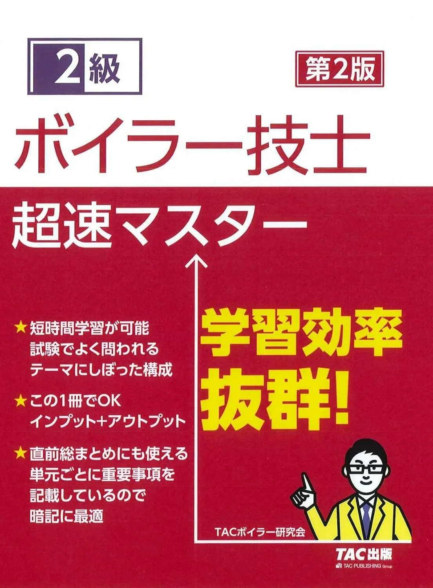
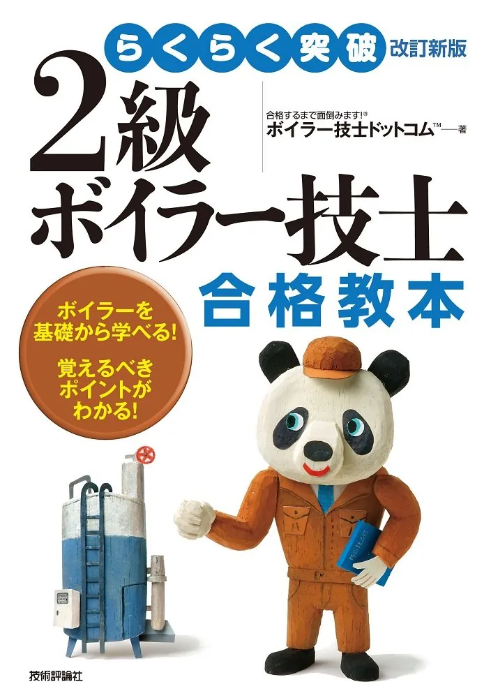

2級ボイラー技士のおすすめテキスト3選【2026年版・独学】
2級ボイラー技士試験は4分野（構造・取扱い・関係法令・燃焼）の理解と演習量が合格の鍵です。本記事では2026年度版の主要テキスト3冊を、独学・社会人受験の視点で比較します。出題範囲は必ずボイラー検定（公式）で確認してください。価格・版情報は購入前にAmazonで必ずご確認ください。
この記事の要点
2級ボイラー技士のテキストを、解説量・演習量・ALL-in-one型かどうかで比較し、独学の最初の1冊に絞りたい。
- 「ユーキャンの2級ボイラー技士 合格テキスト&問題集 第2版」
- 「2級ボイラー技士 超速マスター 第2版」
- 「らくらく突破 改訂新版 2級ボイラー技士 合格教本」
- テキスト選びの3つのポイント
- 過去問との併用
この記事の信頼性について
| 執筆 | 2級ボイラー技士マスター編集部（資格学習サイトの編集チーム） |
|---|---|
| 確認 | 公式情報確認担当（公開前に一次情報との照合を行う担当者） |
| 事実確認日 | 2026-06-04 |
| 主な参照元 |
1テキスト選びの3つのポイント
2級ボイラー技士のテキスト選びでは、①公益財団法人 安全衛生技術試験協会（ボイラー検定・公式）の4分野（構造・取扱い・関係法令・燃焼）に目次が沿っているか、②解説量が自分の前提知識（現場経験の有無）に合うか、③章末演習や別冊問題集とセットで使えるかを確認します。
- ボイラー現場経験が浅い人は図解・ALL-in-one型
- 経験者は教本型＋問題集追加
- という使い分けが多い
おすすめテキスト3選（比較）
価格・在庫・版情報は執筆時点（2026-06-04）のAmazon税込参考です。購入前に必ず販売ページでご確認ください。
| 順位 | 商品名 | 価格（税込参考） | ページ数 | 向いている人 |
|---|---|---|---|---|
| 1 | ユーキャンの2級ボイラー技士 合格テキスト&問題集 第2版 | ¥2,200 | 344 | ALL-in-one型で4分野を1冊から始めたい初学者 |
| 2 | 2級ボイラー技士 超速マスター 第2版 | ¥2,530 | 396 | 演習量を重視し、テキストと問題を厚く回したい人 |
| 3 | らくらく突破 改訂新版 2級ボイラー技士 合格教本 | ¥2,068 | 248 | 教本形式で条文・数値を整理しながら学びたい人 |

ユーキャンの2級ボイラー技士 合格テキスト&問題集 第2版
- 4分野をテキストと演習で1冊にまとめた定番
- ユーキャン系列の過去問・問題集と章立てが揃いやすい
- 図表中心でボイラー技士の全体像をつかみやすい

2級ボイラー技士 超速マスター 第2版
- TACブランドで独学受験生に選ばれやすい
- 解説と演習のバランス型
- 超速問題集へのステップアップがしやすい

らくらく突破 改訂新版 2級ボイラー技士 合格教本
- 合格教本シリーズで論点を段階的に整理
- 問題集（別冊）との役割分担が明確
- 社会人独学で読み進めやすい分量
2おすすめテキスト比較の見方
比較では「ユーキャン系で過去問とセット」「TAC超速で演習厚め」「技評合格教本で条文整理」の3タイプで見ます。独学初期は理解用1冊に絞り、演習が進んだ段階で過去問専門1冊（おすすめ問題集の記事）を追加する構成が扱いやすいです。2級ボイラー技士マスターの過去問で分野別得点を確認し、足りない解説量を基準に選んでください。
公益財団法人 安全衛生技術試験協会（ボイラー検定・公式）の出題範囲（4分野）と照合し、2級ボイラー技士マスターの過去問・用語解説と組み合わせて復習サイクルを回してください。
31位：ユーキャン合格テキストの特徴
「ユーキャンの2級ボイラー技士 合格テキスト&問題集 第2版」（2,200円税込参考・344ページ・B5判）は、4分野を1冊で学べるALL-in-one型の定番です。成美堂の過去6回問題集と組み合わせやすく、初学者が最初の1冊に選びやすい構成です。
向いている人：ボイラー技士試験をこれから始め、テキストと演習を1冊で回したい人。
公益財団法人 安全衛生技術試験協会（ボイラー検定・公式）の出題範囲（4分野）と照合し、2級ボイラー技士マスターの過去問・用語解説と組み合わせて復習サイクルを回してください。
42位・3位：TAC超速マスター・技評合格教本
「2級ボイラー技士 超速マスター 第2版」（TAC出版・2,530円税込参考・396ページ）は、解説と演習量のバランス型。超速問題集（別記事）へのステップアップがしやすい本格教材です。
「らくらく突破 改訂新版 2級ボイラー技士 合格教本」（技術評論社・2,068円税込参考・248ページ）は、教本形式で条文・数値を整理しながら学びたい社会人独学向け。問題集は別冊で追加する構成が向きます。
5テキストとボイラマスター過去問の併用
テキストで論点を押さえたら、2級ボイラー技士マスターの過去問・一問一答で本試験形式の演習に移ります。4分野ごとの得点を記録し、弱点分野をテキスト該当章に戻って復習するサイクルが効率的です。公表問題・協会発行教材は別記事（公表問題・公式教材3選）も参照してください。
公益財団法人 安全衛生技術試験協会（ボイラー検定・公式）の出題範囲（4分野）と照合し、2級ボイラー技士マスターの過去問・用語解説と組み合わせて復習サイクルを回してください。
6購入前チェックリスト
購入前に以下を確認してください。
・2026年度版（最新版）か
・4分野すべてが目次に含まれているか
・Amazon在庫・価格（執筆時点と異なる場合あり）
・手元の学習計画（2か月／4か月）に対してページ数・演習量が見合うか
公益財団法人 安全衛生技術試験協会（ボイラー検定・公式）の出題範囲（4分野）と照合し、2級ボイラー技士マスターの過去問・用語解説と組み合わせて復習サイクルを回してください。
7よくある質問
さくさく理解シリーズは使えますか？
テキストは1冊だけで足りますか？
最新年度版じゃないとダメですか？
記事の基本情報
| ジャンル | 独学対策 |
|---|---|
| タグ | 独学 / 参考書 |
公式情報の確認
公式情報の確認：2級ボイラー技士試験の最新情報は、安全衛生技術試験協会（公式）などの公式情報を必ず確認してください。本人に割り当てられた試験会場は受験票の表記が正本です。